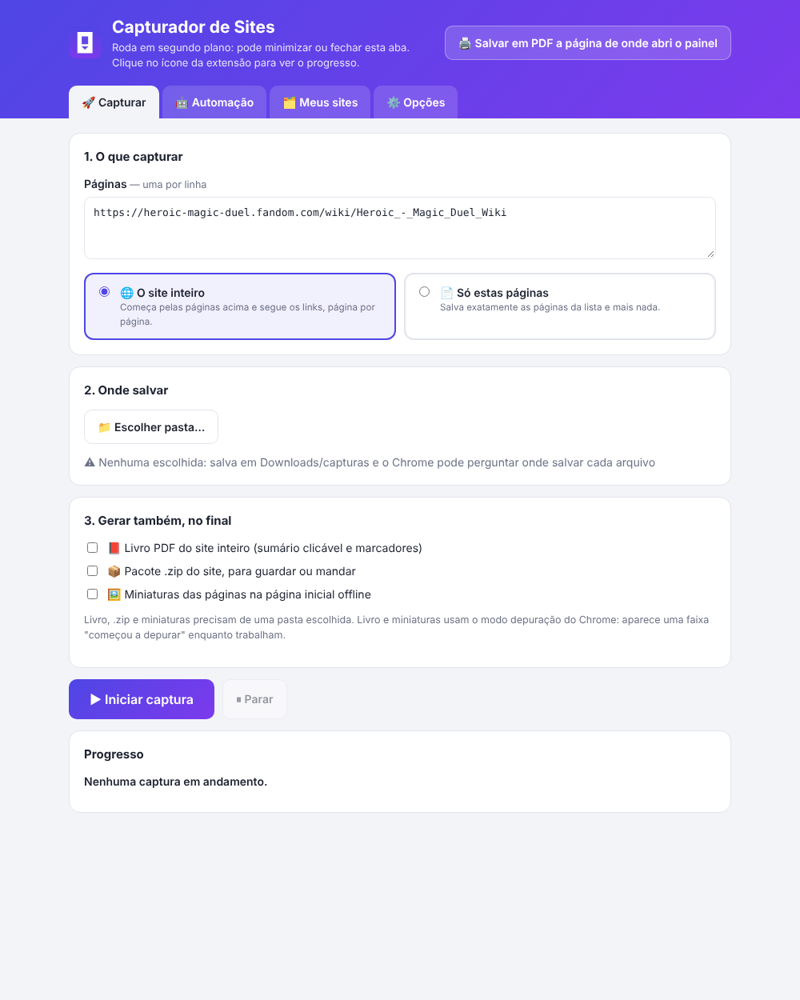
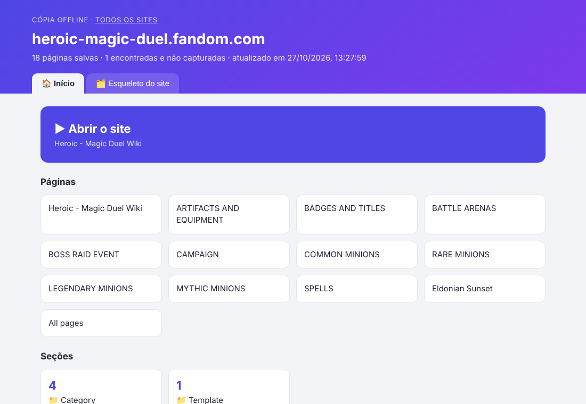
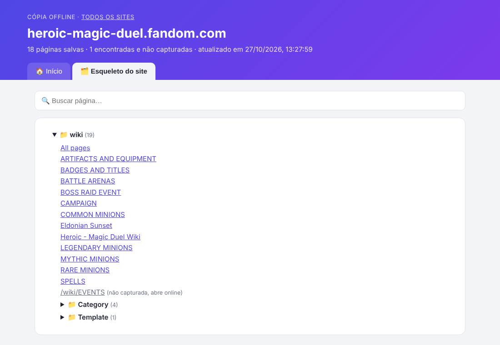
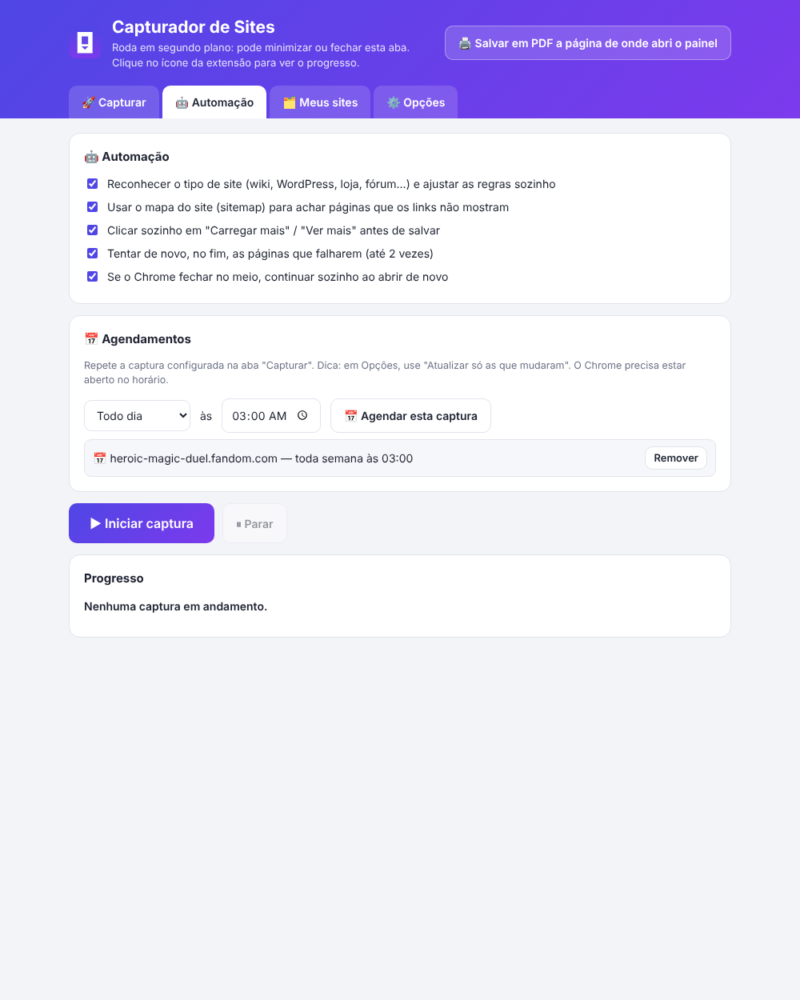
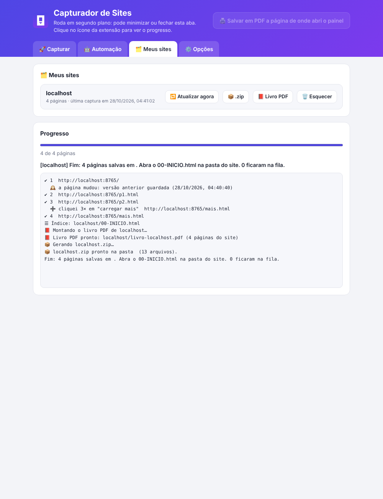
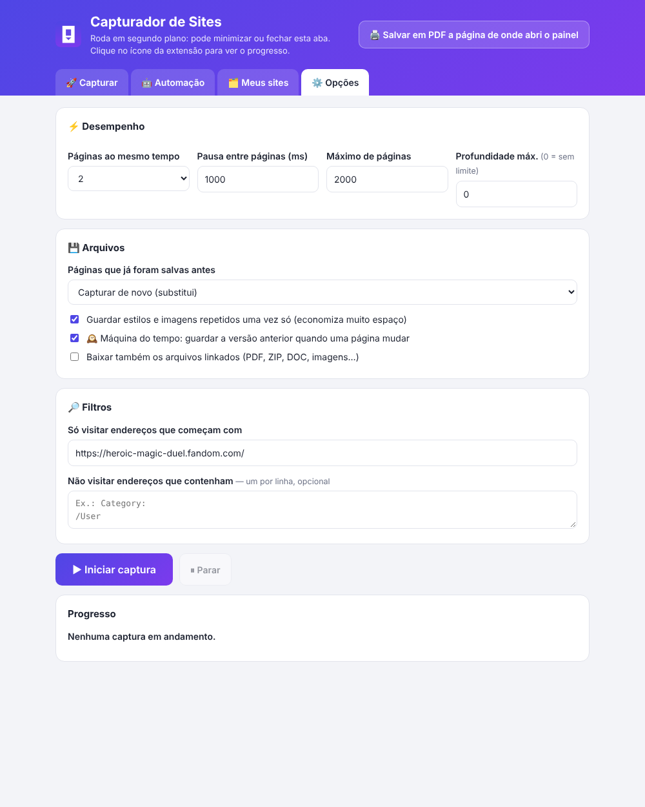

Capturador de Sites — Tutorial
Capturador de Sites
Tutorial completo: como usar e para que serve cada função
Versão 6.0
1. O que é e o que você ganha
O Capturador de Sites é uma extensão do Chrome que salva sites inteiros no seu computador para você
navegar sem internet, como se estivesse no site de verdade.
- Percorre o site sozinho, página por página, seguindo os links — você só informa por onde começar.
- Roda em segundo plano: pode minimizar, fechar o painel e continuar usando o computador.
- Cada página vira um arquivo
.html com imagens, estilos e fontes dentro, sem anúncios e sem scripts.
- Os links entre as páginas passam a abrir os arquivos salvos: você navega pelos menus normalmente, offline.
- Gera uma página inicial (
00-INICIO.html) com o "esqueleto" do site e busca por título e por texto.
- Extras: livro PDF do site inteiro, pacote .zip, miniaturas, máquina do tempo (guarda versões antigas)
e agendamento para manter a cópia atualizada.
💡 Em resumo: clique no ícone, cole o endereço, escolha a pasta e clique em Iniciar captura. O resto é automático.
2. Instalar e atualizar
Instalar
- Descompacte o arquivo
capturador.zip numa pasta fixa (ex.: Documentos\Capturador).
- No Chrome, abra
chrome://extensions.
- Ligue o Modo do desenvolvedor (canto superior direito).
- Clique em Carregar sem compactação e escolha a pasta descompactada.
- Fixe o ícone 📌 na barra do Chrome para achá-lo fácil.
Atualizar para uma versão nova
Substitua os arquivos da pasta pelos da versão nova e clique no botão ↻ recarregar da extensão em chrome://extensions.
⚠️ Não use "Remover" para atualizar: isso apaga a pasta de destino escolhida, os agendamentos e o histórico de sites que a extensão guarda.
3. Sua primeira captura em 6 passos
- Abra o site que quer salvar (ex.: a página principal de uma wiki).
- Clique no ícone do Capturador. O painel abre já com o endereço preenchido.
- Em 1. O que capturar, deixe marcado 🌐 O site inteiro.
- Em 2. Onde salvar, clique em 📁 Escolher pasta… e escolha onde guardar (só na primeira vez).
- Clique em ▶ Iniciar captura.
- Acompanhe em Progresso — ou feche o painel. Quando terminar, chega uma notificação e o ícone mostra ✔.

No fim, abra a pasta escolhida → pasta do site → 00-INICIO.html.
4. Navegando no site offline
A pasta escolhida fica assim:
| Arquivo / pasta | O que é |
|---|
| 00-SITES.html | Lista de todos os sites que você já capturou. |
| site.com/00-INICIO.html | Página inicial do site offline — comece por aqui. |
| site.com/wiki/…html | As páginas, nas mesmas pastas do site original. |
| site.com/_recursos/ | Estilos e imagens compartilhados entre as páginas (economia de espaço). Não apague. |
| site.com/_miniaturas/ | Miniaturas das páginas (se ligadas). |
| livro-site.com.pdf / site.com.zip | Livro PDF e pacote .zip (se pedidos). |

Aba Início: botão grande ▶ Abrir o site, páginas principais em cartões e seções.

Aba Esqueleto: árvore com todas as páginas e busca por título ou por qualquer palavra do texto.
- Clique nos links e menus normalmente: eles abrem os arquivos salvos, na mesma aba. Use Voltar do navegador à vontade.
- Em toda página há um botão ☰ Índice do site no canto inferior direito, que volta para a página inicial.
- Páginas que ficaram de fora (pelo limite) abrem um aviso 📭 "não capturada" com o link para a versão online.
- Páginas que mudaram mostram 🕰️ datas no esqueleto: clique para abrir a versão antiga.
💡 Pode copiar a pasta do site inteira para um pendrive ou outro computador. Só não mova arquivos de dentro dela.
5. Aba 🚀 Capturar
| Item | Para que serve / quando usar |
|---|
| Páginas (uma por linha) | Onde a captura começa. No modo "site inteiro", basta a página principal. No modo "só estas", cole todas as páginas que quer. |
| 🌐 O site inteiro | Segue os links e captura o site todo, página por página. Use para guardar uma wiki, um blog, um manual. |
| 📄 Só estas páginas | Salva exatamente as páginas da lista e mais nada (podem ser de sites diferentes). Links para páginas fora da lista continuam abrindo online. |
| 📁 Escolher pasta… | Onde tudo é gravado, sem perguntar nada. Escolha uma vez; a extensão lembra. Sem pasta, vai para Downloads/capturas e o Chrome pode perguntar onde salvar. |
| 📕 Livro PDF | Um PDF único com capa, sumário clicável e todas as páginas. Bom para ler no celular, imprimir ou arquivar. |
| 📦 Pacote .zip | Um arquivo .zip com o site inteiro, para mandar a alguém ou guardar. |
| 🖼️ Miniaturas | Imagenzinha de cada página nos cartões da página inicial offline. |
| 🖨️ Salvar em PDF a página… | (topo do painel) Gera o PDF só da página de onde você abriu o painel. |
| ▶ Iniciar / ⏸ Parar | Ficam sempre visíveis, em qualquer aba. Parar termina a página em andamento e deixa a captura pronta para continuar depois. |
⚠️ Livro e miniaturas usam o "modo depuração" do Chrome: enquanto trabalham, aparece no topo uma faixa dizendo que a extensão "começou a depurar este navegador". É normal e some no fim.
6. Aba 🤖 Automação

| Opção | Para que serve |
|---|
| Reconhecer o tipo de site | Identifica wiki/Fandom, WordPress, loja Shopify, fórum Discourse e Blogger e ignora sozinho o que não interessa (login, admin, carrinho, feeds). Você não precisa preencher filtros. |
| Usar o mapa do site (sitemap) | Lê a lista oficial de páginas que muitos sites publicam e acha páginas que nenhum link mostra. |
| Clicar em "Carregar mais" | Antes de salvar, clica nos botões "Carregar mais / Ver mais" e desce até o fim de páginas com rolagem infinita, para não perder itens. |
| Tentar de novo as que falharem | Páginas com erro voltam para o fim da fila e são tentadas de novo (até 2 vezes). |
| Continuar sozinho | Se o Chrome fechar no meio (queda de energia, reinício), ao abrir de novo a captura continua sozinha em 1 minuto. |
| 📅 Agendamentos | Repete a captura configurada todo dia ou toda semana no horário escolhido. Aparece numa lista com botão Remover. |
💡 Para manter um site sempre em dia: em Opções escolha "Atualizar só as que mudaram" e depois agende a captura semanalmente.
7. Aba 🗂️ Meus sites

| Botão | O que faz |
|---|
| 🔁 Atualizar agora | Recaptura o site a partir da página inicial, salvando só as páginas que mudaram. |
| 📦 .zip | Gera o .zip de um site já capturado, sem capturar de novo. |
| 📕 Livro PDF | Gera o livro PDF de um site já capturado. |
| 🗑️ Esquecer | Tira o site da lista e do índice. Não apaga os arquivos da pasta. |
8. Aba ⚙️ Opções

| Opção | Para que serve / sugestão |
|---|
| Páginas ao mesmo tempo | Quantas páginas captura em paralelo (1 a 4). Mais é mais rápido, mas pesa mais no computador e no site. Padrão: 2. |
| Pausa entre páginas | Intervalo para não sobrecarregar o site. Padrão: 1000 ms (1 s). |
| Máximo de páginas | Limite de segurança. As que sobrarem aparecem como "não capturadas". |
| Profundidade máx. | Até quantos cliques de distância da página inicial seguir. 0 = sem limite. |
| Páginas já salvas antes | Capturar de novo (substitui), Pular (rápido, só completa o que falta) ou Atualizar só as que mudaram (ideal para agendamentos). |
| Estilos e imagens uma vez só | Guarda o que se repete entre páginas em _recursos/. Economiza muito espaço. Deixe ligado. |
| 🕰️ Máquina do tempo | Quando uma página mudou, guarda a versão anterior ao lado dela (com a data) em vez de apagar. |
| Baixar arquivos linkados | Baixa também PDFs, ZIPs, documentos e imagens que o site oferece em links. |
| Só visitar endereços que começam com | Limita a captura a uma parte do site (ex.: só site.com/blog/). Vazio = o site todo. |
| Não visitar endereços que contenham | Um trecho por linha (ex.: Category:). Essas páginas ficam de fora. |
9. Botão direito e PDF de uma página
Clique com o botão direito em qualquer página (ou no ícone da extensão) e escolha:
| Item do menu | O que faz |
|---|
| 🌐 Capturar este site inteiro | Começa a capturar o site da página atual, com as últimas configurações do painel. Avisa por notificação. |
| 📄 Capturar só esta página | Salva só a página atual. |
| 🖨️ Salvar esta página em PDF | Gera um PDF da página (com as imagens carregadas) direto nos Downloads, sem janela de impressão. |
| ⚙️ Abrir o painel | Abre o painel de configuração. |
10. Progresso, pausar e continuar
O cartão Progresso mostra o site em captura, uma barra com o tempo estimado e o registro de tudo o que aconteceu:
| Sinal no registro | Significado |
|---|
| ✔ 12 endereço | Página salva (número de ordem). |
| ↷ já salva | Pulada porque já existia (ou não mudou). |
| ✖ endereço — motivo | Falhou. Se "vou tentar de novo no fim", ela volta para a fila. |
| 🧠 / 🗺️ / ➕ / 🕰️ / 📎 | Tipo de site reconhecido / mapa do site lido / "carregar mais" clicado / versão antiga guardada / arquivo linkado baixado. |
No ícone da extensão: um número = páginas salvas até agora · ✔ = terminou · ⏸ = captura pausada · PDF = gerando PDF · ✖ = erro.
- Parar: termina a página em andamento e pausa. O botão ▶ Continuar de onde parou aparece no topo do painel.
- Fechou o Chrome no meio? Ao abrir, a captura continua sozinha (ou clique em Continuar).
- Começar outro site com uma captura rodando: o painel pergunta se deve parar a atual e começar a nova.
11. Receitas prontas
📚 Guardar uma wiki inteira (ex.: Fandom)
Abra a página principal → ícone → 🌐 O site inteiro → pasta → Iniciar. A extensão reconhece a wiki e pula as páginas de sistema sozinha.
📄 Salvar só algumas páginas
Cole os endereços (um por linha) → 📄 Só estas páginas → Iniciar.
🔄 Manter um site sempre atualizado
Opções → "Atualizar só as que mudaram" · Automação → Toda semana às 03:00 → 📅 Agendar. Com a 🕰️ máquina do tempo ligada, as versões antigas ficam guardadas.
📱 Ler no celular ou imprimir
Marque 📕 Livro PDF antes de iniciar (ou use Meus sites → 📕 Livro PDF depois) e envie o PDF para o celular.
💾 Levar no pendrive / mandar para alguém
Marque 📦 Pacote .zip (ou Meus sites → 📦 .zip). Quem receber descompacta e abre o 00-INICIO.html.
⚡ Capturar um site grande mais rápido
Opções → Páginas ao mesmo tempo = 3 ou 4 · Pausa = 500. Deixe "Pular" ligado se estiver completando uma captura anterior.
🧩 Completar uma captura que parou no meio
Clique em ▶ Continuar de onde parou. Se perdeu o botão: Opções → "Pular" → Iniciar de novo (só captura o que falta).
12. Problemas comuns
| Problema | Solução |
|---|
| O Chrome pergunta onde salvar cada arquivo | Escolha uma pasta no painel (📁 Escolher pasta…). Sem pasta, a extensão usa os Downloads do Chrome, que perguntam. |
| "Falta liberar a pasta" depois de reiniciar | Regra de segurança do Chrome: abra o painel e clique em Iniciar ou Continuar — ele pede um clique de confirmação. |
| A captura fica lenta com o Chrome em segundo plano | Desligue a "Economia de energia" e a "Economia de memória" em Configurações → Desempenho. Em último caso, abra o Chrome com --disable-renderer-backgrounding --disable-backgrounding-occluded-windows --disable-background-timer-throttling no atalho. |
| Fechei a janela minimizada de captura | Não tem problema: a extensão abre outra e continua. Ela some sozinha no fim. |
| Aparece "começou a depurar este navegador" | É do livro PDF, das miniaturas ou do PDF de página. Normal; some quando terminam. |
| Uma página ficou sem algo (busca, login, comentários) | Esses recursos dependem do servidor do site e não funcionam offline. O conteúdo da página é salvo. |
| Muitas páginas "não capturadas" | Aumente o Máximo de páginas em Opções e use "Pular" para completar. |
| Apareceram páginas que não queria | Opções → "Não visitar endereços que contenham" (um trecho por linha) ou limite com "Só visitar endereços que começam com". |
13. Limites conhecidos
- Scripts não são salvos: busca do site, login, comentários, vídeos do YouTube e menus que só abrem com clique não funcionam offline. Menus que abrem ao passar o mouse funcionam.
- Uma captura por vez (mesmo de sites diferentes).
- Agendamentos e a retomada automática precisam do Chrome aberto.
- Livro PDF, .zip, miniaturas e máquina do tempo precisam de uma pasta escolhida. O livro junta até 300 páginas.
- Mapas do site compactados (
.gz) não são lidos.
💡 O código, as versões e este tutorial ficam no repositório particular Sedricko/Capturador-de-Sites no GitHub.